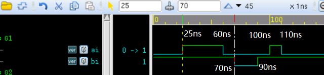

Palabras clave: initial, always
Las sentencias de estructura procedural son de 2 tipos: initial y always. Son las 2 sentencias básicas del modelado a nivel de comportamiento.
Un módulo puede contener múltiples sentencias initial y always, pero los 2 tipos de sentencias no pueden anidarse.
Estas sentencias se ejecutan en paralelo dentro del módulo, sin relación con su orden en el módulo.
Sin embargo, el interior de una sentencia initial o always puede entenderse como ejecutándose secuencialmente (excepto con asignaciones no bloqueantes).
Cada sentencia initial o always genera un flujo de control independiente, y su tiempo de ejecución comienza en el instante 0.
Sentencia initial
La sentencia initial comienza a ejecutarse en el instante 0, se ejecuta una sola vez, y los múltiples bloques initial son independientes entre sí.
Si el bloque initial contiene múltiples sentencias, se necesitan las palabras clave begin y end para formar una sentencia de bloque.
Si el bloque initial tiene solo una sentencia, las palabras clave begin y end pueden usarse o no.
initial, teóricamente, no es sintetizable; se usa principalmente para inicialización, detección de señales, etc.
Modificando ligeramente el código de la sección anterior y realizando una simulación, el código es el siguiente.
Ejemplo
module test ;
reg ai, bi ;
initial begin
ai = 0 ;
#25 ; ai = 1 ;
#35 ; ai = 0 ; //absolute 60ns
#40 ; ai = 1 ; //absolute 100ns
#10 ; ai = 0 ; //absolute 110ns
end
initial begin
bi = 1 ;
#70 ; bi = 0 ; //absolute 70ns
#20 ; bi = 1 ; //absolute 90ns
end
//at proper time stop the simulation
initial begin
forever begin
#100;
//$display("---gyc---%d", $time);
if ($time >= 1000) begin
$finish ;
end
end
end
endmodule
Los resultados de la simulación son los siguientes:
Se puede ver que cuando las 2 sentencias de proceso initial asignan valores a las señales ai y bi respectivamente, no se afectan entre sí.
Los valores de las señales ai y bi cambian según el orden de asignación, por lo que las sentencias internas de initial también pueden considerarse de ejecución secuencial.

Sentencia always
A diferencia de la sentencia initial, la sentencia always se ejecuta repetidamente. El bloque always comienza a ejecutar sus sentencias de comportamiento en el instante 0; después de ejecutar la última sentencia, vuelve a ejecutar la primera del bloque, y así sucesivamente en un bucle.
Debido a su característica de ejecución cíclica, la sentencia always se usa frecuentemente para generar relojes de simulación, detectar comportamiento de señales, etc.
A continuación, se usa always para generar una fuente de reloj de 100 MHz y detener la simulación en 1010 ns. El código es el siguiente.
El código es el siguiente:
Ejemplo
module test ;
parameter CLK_FREQ = 100 ; //100MHz
parameter CLK_CYCLE = 1e9 / (CLK_FREQ * 1e6) ; //switch to ns
reg clk ;
initial clk = 1'b0 ; //clk is initialized to "0"
always # (CLK_CYCLE/2) clk = ~clk ; //generating a real clock by reversing
always begin
#10;
if ($time >= 1000) begin
$finish ;
end
end
endmodule
Los resultados de la simulación son los siguientes:
Se puede ver que el período del reloj es de 100 MHz, que es lo deseado. Además, la simulación se detiene en 1010 ns.